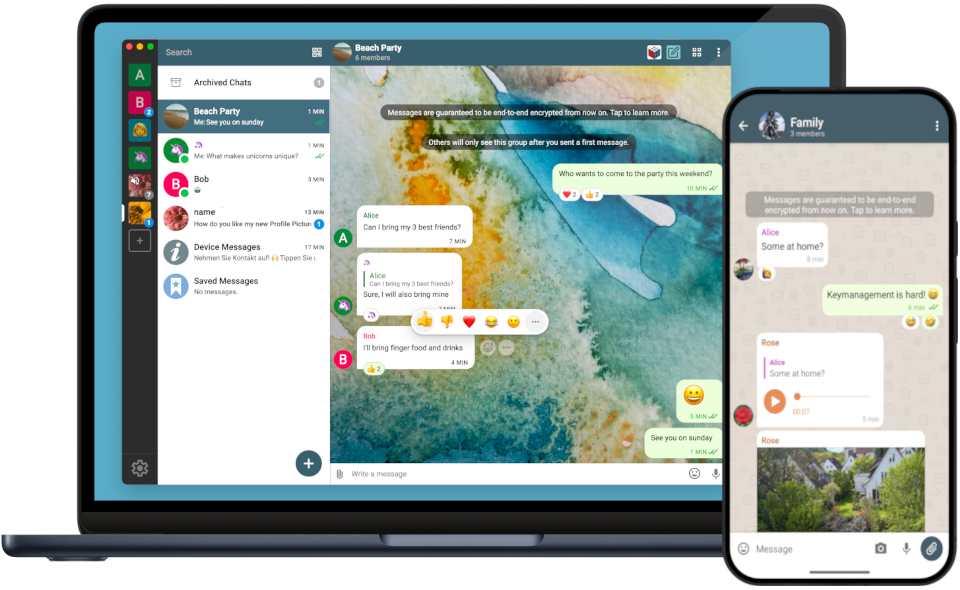

Delta Chat 使用指南
安装软件，创建账号，添加好友。三个步骤，开始聊天。

开始使用 Delta Chat一步一步，轻松上手
选择当前步骤。完成后，继续下一步。
常见问题
几个你可能会遇到的小问题。
苹果手机搜不到 Delta Chat？+
原文建议使用香港或海外地区的 App Store。请使用你自己的可用账号，或向提供这份指南的人询问安装方式。原文提到的 iOS 18 / iOS 26 教程没有附带实际链接，本站暂未收录。
点击配置链接，没有打开应用？+
先确认已安装 Delta Chat，再用手机浏览器打开 talk.cmsv.space，点击页面中的“在 Delta Chat 中创建账号”。如果你在电脑上阅读指南，请在手机上打开该地址。仍无法访问时，请联系指南提供者确认服务状态。
创建账号时，应该检查什么？+
按照原文，确认应用显示的服务器地址为 talk.cmsv.space，再填写自己的名字并点击“同意并创建账号”。截图仅供对照，不同版本的界面可能略有差异。
为什么还没有加上好友？+
发送查找指令、选择正确的联系人之后，还需要等待对方点击名片添加。也请确认双方已加入同一个联系网络，且查找时输入的名字正确。